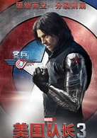
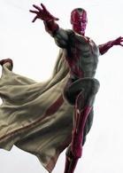
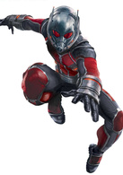
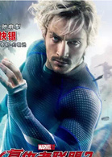
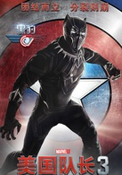

top
top
演员 伊丽莎白·奥尔森
原名旺达·马克西莫夫，她美丽而神秘，拥有操控人心的能力。成为猩红女巫后，她能够操控敌人内心，由内而外摧毁敌人。旺达和哥哥皮特洛都是西崔克尔男爵神秘实验的成果。
 演员 塞巴斯蒂安·斯坦
昵称bucky（巴基）青少年时期的bucky是美国队长的伙伴，帮助队长在战场干些不那么“美国偶像”的工作，如：秘密潜入、刺杀等。一次任务中他被炸入冰冷的海里，直到1945年春bucky才被苏联潜艇在英吉利海峡附近的深海找到。如同美国队长一样，bucky一直被冰封在寒冷的冰里，但不同的是，苏联人解冻了他，并且苏醒后的他失去了记忆和左臂。苏联人为他装上了电子手臂，并利用他快速学习和记忆的能力启动了“冬日战士”计划，把bucky训练成了效忠苏维埃的杀手。
 演员 保罗·贝坦尼
幻视在奥创之战中被托尼·斯塔克创造出来后，就成为了复仇者联盟的一员。但他依旧在人类社会中探寻着自己的立足之地，也试图了解自己无限能力的边际在哪里。幻视此次加入钢铁侠阵营是出于自己的信念，因为从逻辑上讲，接受政府监管是保护世界最安全的方式。
 演员 保罗·路德
在与“猎鹰”山姆·威尔逊切磋过一次之后“蚁人”斯科特·朗成为了复联成员耳中一个熟悉的名字。猎鹰将不知情的蚁人招入美队麾下。蚁人伸缩自如的能力能够以小搏大，摧毁强劲的敌人。此外他还是个美国队长的小粉丝。
演员 汤姆·赫兰德
彼得在中城高中念书，他成绩优异，高中生彼得·帕克在一次课外活动中意外的被一只受过放射性感染的蜘蛛咬伤后，获得蜘蛛一般的特殊能力，他的秘密被钢铁侠所发现并找他帮忙，蜘蛛侠是钢铁侠的狂热迷，全力支持钢铁侠。
 演员 亚伦·泰勒-约翰逊
本名皮特罗·马克西莫夫的快银拥有疾如闪电的速度。快银对双胞胎妹妹旺达保护欲极强。为了守卫战火频繁的家乡小城，他愿意付出任何代价。他同妹妹均为西崔克尔男爵神秘实验的志愿者，并从某种未知能量体中获得了非比寻常的超能力。
 演员 查德维克·博斯曼
提恰拉的父亲提恰卡是瓦坎达的国王，由于一次爆炸他的父亲死亡，误以为是巴基所为，加入了支持政府监管的一方，一心想追杀巴基。但当事情逐渐恶化的时候，提恰拉必须要揭开自己是黑豹的秘密，做出自己的选择。黑豹有他自己的打算，选择与钢铁侠结盟也是为了实现自己的目标。